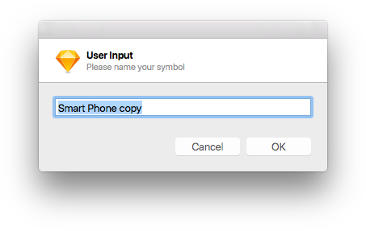
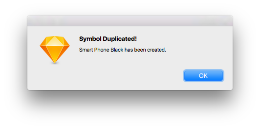
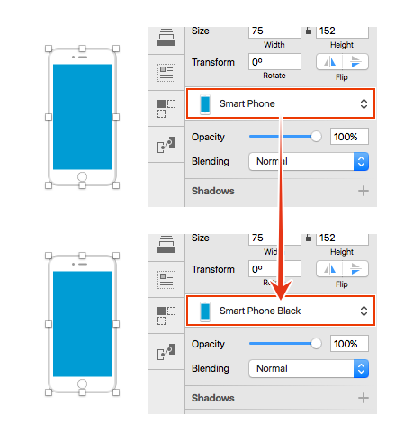

Sketchプラグインを適当に選んで紹介していく、Sketch Plugin Advent Calendar 2016 18日目は、シンボルをその場で複製してインスタンスを入れ替える「Duplicate Symbolプラグイン」です。
シンボルを複製して別のシンボルとする場合、Symbolsページで複製してから元に戻り入れ替える必要がありますが、このプラグインはそれを一発で解決します。
ショートカットはCommand + Control + Shift + Dです。
プラグインを実行すると、新しいシンボル名を入力するウィンドウが表示されます。

新しいシンボル名を入力し［OK］ボタンをクリックすれば、次のウィンドウが表示されます。

マスターも自動的に入れ替わります。

それでは、楽しいSketchライフを。